Diversité phylogénétique de l'assiette
Name of the recipe: Lasagnes végétariennes (facile)
URL of the recipe: https://www.marmiton.org/recettes/recette_lasagnes-vegetariennes-facile_10527.aspx
Number of ingredients: 11
Number of specie found for the ingredients: 7
Ingredients that haven't match with a species: Sel, Herbes de provence
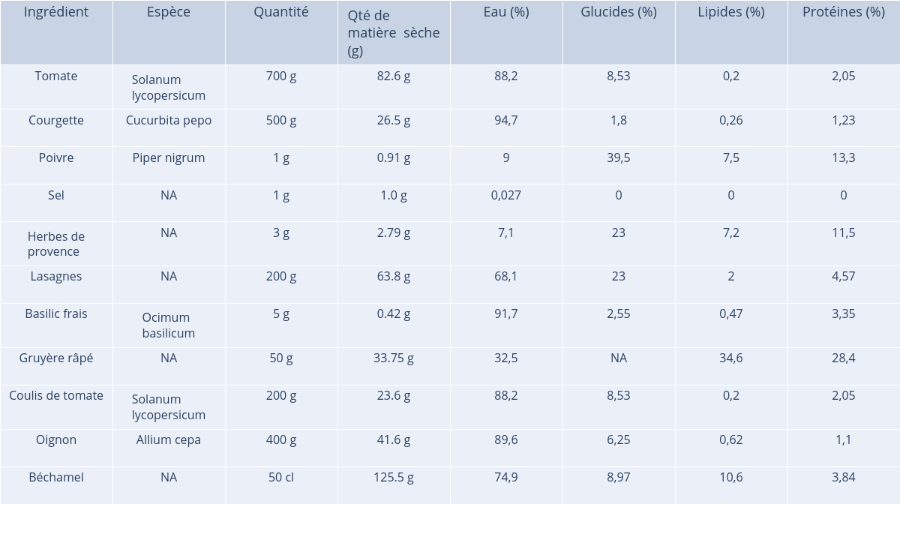
Phylogenetic diversity: 247.5
Weighted phylogenetic diversity: 33.71
Shannon's index: 1.18
Simpson's index: 3.91
Name of the recipe: Hachis parmentier végétarien
URL of the recipe: https://www.marmiton.org/recettes/recette_hachis-parmentier-vegetarien_14594.aspx
Number of ingredients: 10
Number of specie found for the ingredients: 10
Ingredients that haven't match with a species: Navet
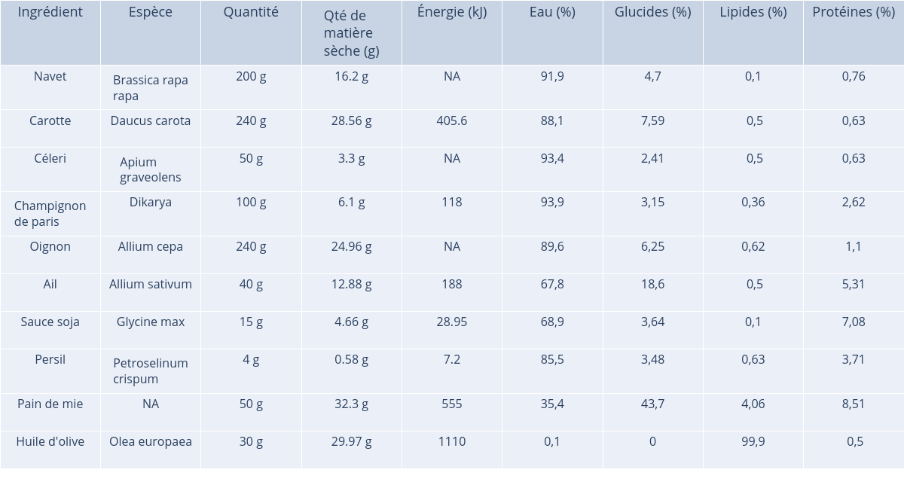
Phylogenetic diversity: 176.0
Weighted phylogenetic diversity: 19.34
Shannon's index: 2.15
Simpson's index: 0.36
Name of the recipe: Curry de légumes végétarien
URL of the recipe: https://www.marmiton.org/recettes/recette_curry-de-legumes-vegetarien_88522.aspx
Number of ingredients: 12
Number of specie found for the ingredients: 10
Ingredients that haven't match with a species: Sel, Pâte de curry

Phylogenetic diversity: 161.78
Weighted phylogenetic diversity: 16.71
Shannon's index: 2.01
Simpson's index: 1.09
Name of the recipe: Hamburger Végétarien
URL of the recipe: https://www.marmiton.org/recettes/recette_hamburger-vegetarien_19445.aspx
Number of ingredients: 10
Number of specie found for the ingredients: 6
Ingredients that haven't match with a species: Épices, Toastinette, Mayonnaise
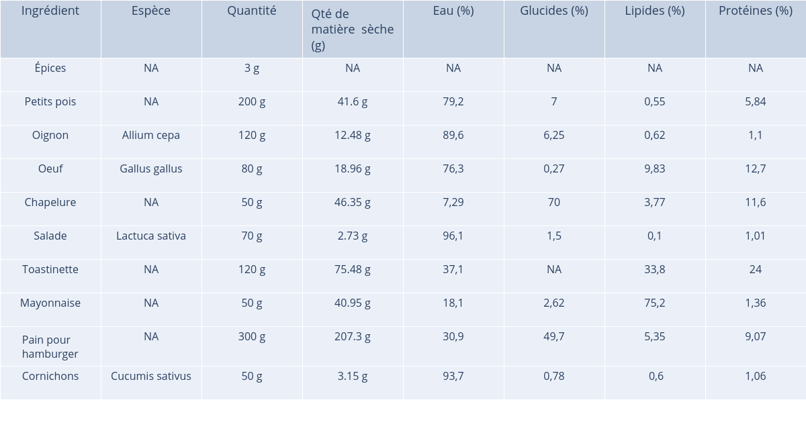
Phylogenetic diversity: 196.67
Weighted phylogenetic diversity: 24.22
Shannon's index: -1.88
Simpson's index: 8.82
Name of the recipe: Tourte de Noël végétarienne de Coralie
URL of the recipe: https://www.marmiton.org/recettes/recette_tourte-de-noel-vegetarienne-de-coralie_15536.aspx
Number of ingredients: 16
Number of specie found for the ingredients: 15
Ingredients that haven't match with a species: Madère
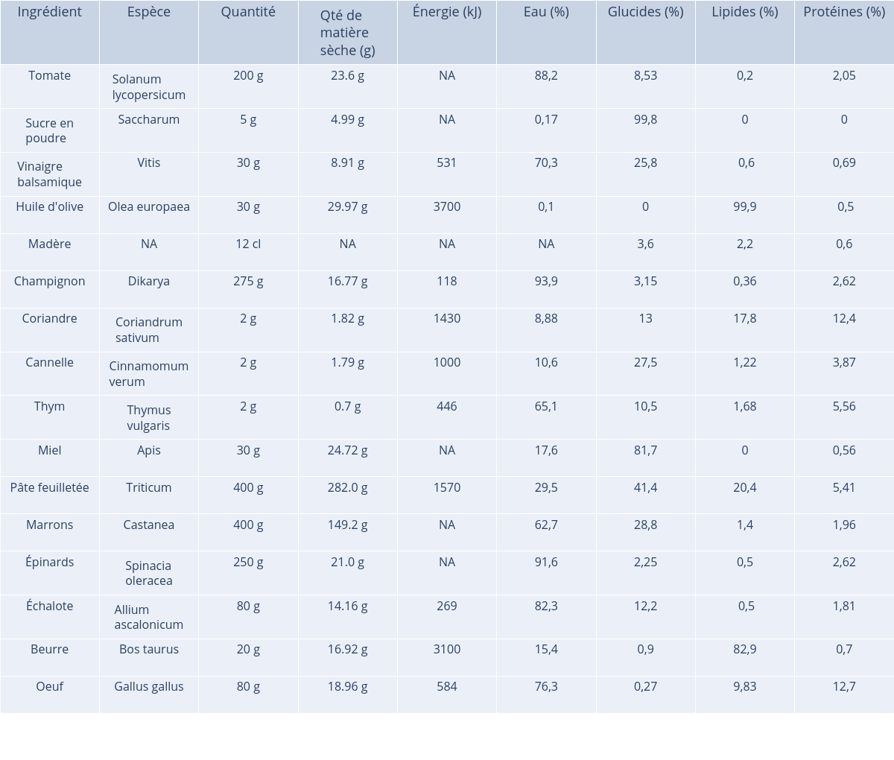
Phylogenetic diversity: 409.43
Weighted phylogenetic diversity: 25.68
Shannon's index: -0.41
Simpson's index: 10.55
Name of the recipe: Paëlla végétarienne
URL of the recipe: https://www.marmiton.org/recettes/recette_paella-vegetarienne_47534.aspx
Number of ingredients: 13
Number of specie found for the ingredients: 10
Ingredients that haven't match with a species: Sel
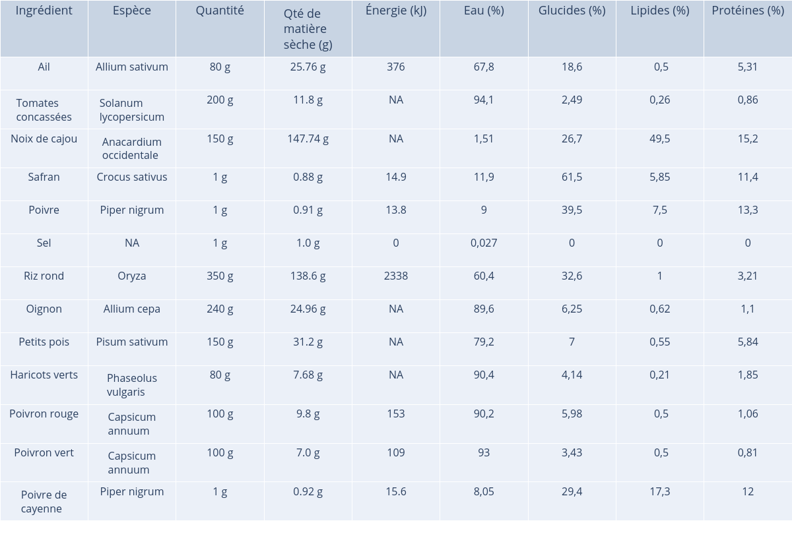
Phylogenetic diversity: 197.09
Weighted phylogenetic diversity: 17.06
Shannon's index: 0.98
Simpson's index: 4.36
Name of the recipe: Ragoût végétarien aux légumes
URL of the recipe: https://www.marmiton.org/recettes/recette_ragout-vegetarien-aux-legumes_65191.aspx
Number of ingredients: 14
Number of specie found for the ingredients: 11
Ingredients that haven't match with a species: Bouillon, Eau, Herbes de provence
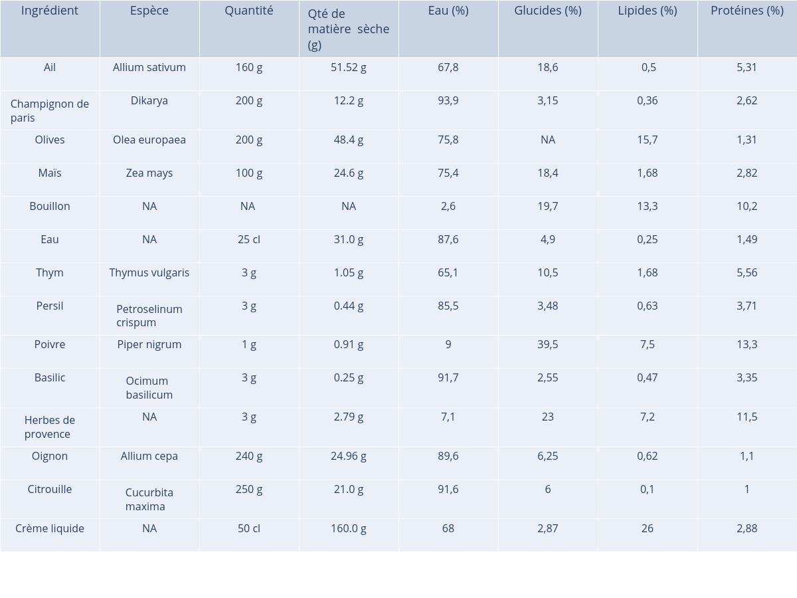
Phylogenetic diversity: 246.0
Weighted phylogenetic diversity: 31.08
Shannon's index: 1.35
Simpson's index: 3.24
Name of the recipe: Tartare végétarien de betteraves rouges au fromage de chèvre
URL of the recipe: https://www.marmiton.org/recettes/recette_tartare-vegetarien-de-betteraves-rouges-au-fromage-de-chevre_31529.aspx
Number of ingredients: 9
Number of specie found for the ingredients: 6
Ingredients that haven't match with a species: Tabasco, Sel, Mayonnaise
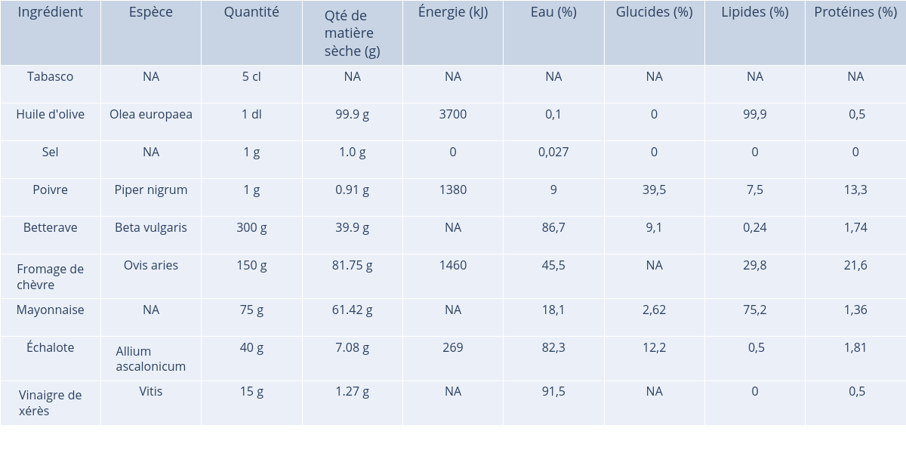
Phylogenetic diversity: 144.8
Weighted phylogenetic diversity: 28.75
Shannon's index: 0.82
Simpson's index: 1.83
Name of the recipe: Burger végétarien aux lentilles
URL of the recipe: https://www.marmiton.org/recettes/recette_burger-vegetarien-aux-lentilles_345408.aspx
Number of ingredients: 14
Number of specie found for the ingredients: 10
Ingredients that haven't match with a species: Ketchup, Sel, Mayonnaise
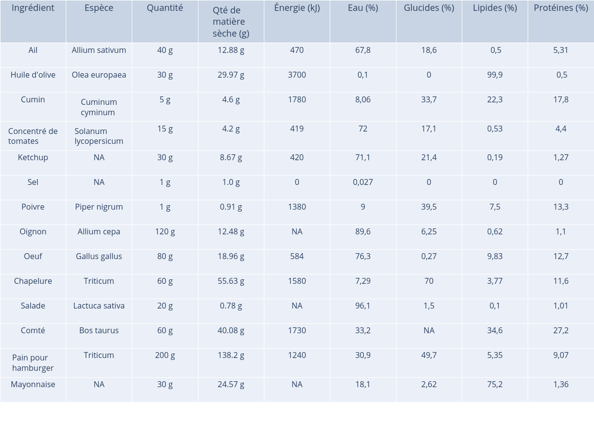
Phylogenetic diversity: 301.6
Weighted phylogenetic diversity: 26.59
Shannon's index: 1.03
Simpson's index: 4.14
Name of the recipe: Tarte provençale fine, light, végétarienne, économique, rapide
URL of the recipe: https://www.marmiton.org/recettes/recette_tarte-provencale-fine-light-vegetarienne-economique-rapide_38642.aspx
Number of ingredients: 14
Number of specie found for the ingredients: 10
Ingredients that haven't match with a species: Ketchup, Sel, Mayonnaise
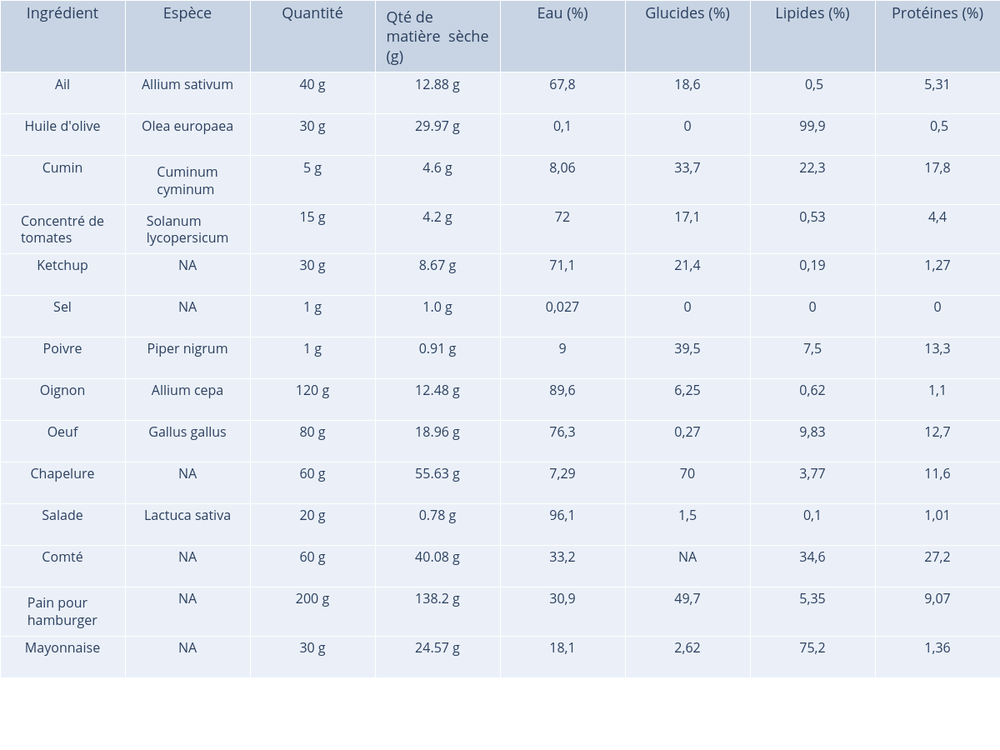
Phylogenetic diversity: 301.6
Weighted phylogenetic diversity: 26.59
Shannon's index: 1.03
Simpson's index: 4.14
Name of the recipe: Nems végétariens
URL of the recipe: https://www.marmiton.org/recettes/recette_nems-vegetariens_26829.aspx
Number of ingredients: 11
Number of specie found for the ingredients: 7
Ingredients that haven't match with a species: Huile
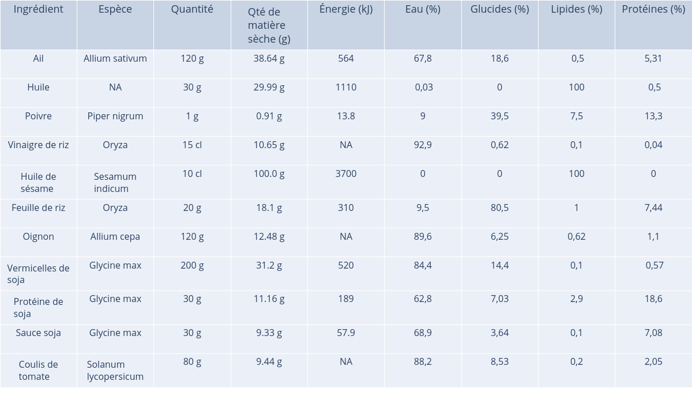
Phylogenetic diversity: 172.67
Weighted phylogenetic diversity: 17.03
Shannon's index: 2.18
Simpson's index: 1.27
Name of the recipe: Terrine de légumes (carotte, courgette, brocoli)
URL of the recipe: https://www.marmiton.org/recettes/recette_terrine-de-legumes-carotte-courgette-brocoli_38155.aspx
Number of ingredients: 7
Number of specie found for the ingredients: 6
Ingredients that haven't match with a species: Sel
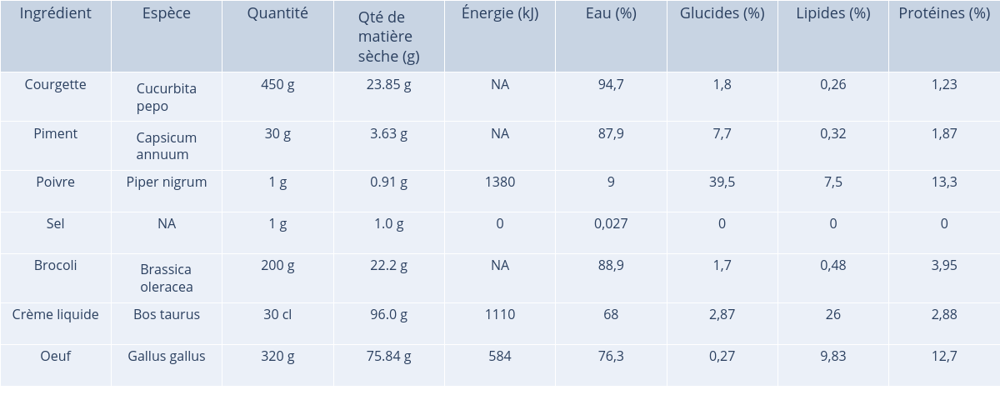
Phylogenetic diversity: 196.8
Weighted phylogenetic diversity: 39.52
Shannon's index: 1.09
Simpson's index: 1.6
Name of the recipe: Terrine de lentilles
URL of the recipe: https://www.marmiton.org/recettes/recette_terrine-de-lentilles_12862.aspx
Number of ingredients: 7
Number of specie found for the ingredients: 7
Ingredients that haven't match with a species: -
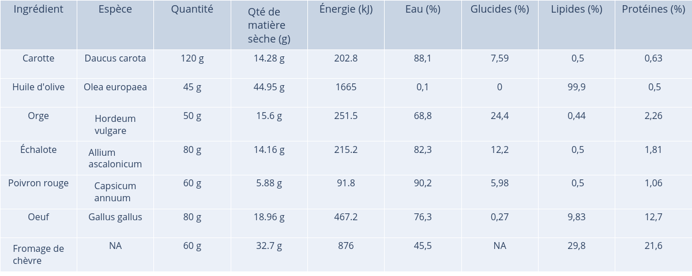
Phylogenetic diversity: 236.0
Weighted phylogenetic diversity: 34.35
Shannon's index: 2.05
Simpson's index: 0.41
Name of the recipe: Cappuccino de champignons
URL of the recipe: https://www.marmiton.org/recettes/recette_cappuccino-de-champignons_14048.aspx
Number of ingredients: 6
Number of specie found for the ingredients: 6
Ingredients that haven't match with a species: -
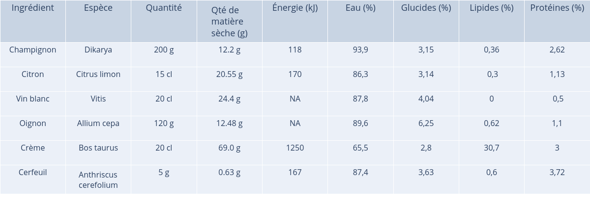
Phylogenetic diversity: 160.0
Weighted phylogenetic diversity: 32.53
Shannon's index: 1.47
Simpson's index: 0.61
Name of the recipe: Gratin de courgettes rapide
URL of the recipe: https://www.marmiton.org/recettes/recette_gratin-de-courgettes-rapide_17071.aspx
Number of ingredients: 7
Number of specie found for the ingredients: 4
Ingredients that haven't match with a species: Sel
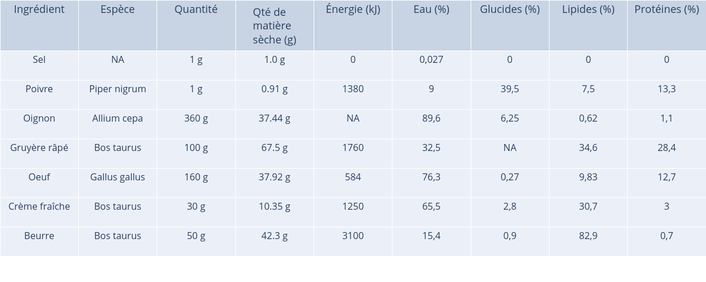
Phylogenetic diversity: 178.0
Weighted phylogenetic diversity: 28.0
Shannon's index: 1.87
Simpson's index: 0.82
Name of the recipe: Galettes de pomme de terre
URL of the recipe: https://www.marmiton.org/recettes/recette_galettes-de-pomme-de-terre_14072.aspx
Number of ingredients: 6
Number of specie found for the ingredients: 4
Ingredients that haven't match with a species: Sel, Huile
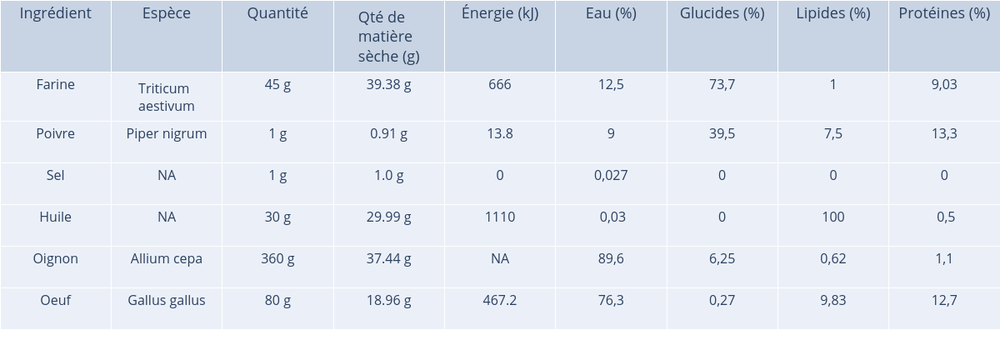
Phylogenetic diversity: 127.33
Weighted phylogenetic diversity: 31.19
Shannon's index: 1.09
Simpson's index: 0.33
Name of the recipe: Riz et petits légumes au safran
URL of the recipe: https://www.marmiton.org/recettes/recette_riz-et-petits-legumes-au-safran_38173.aspx
Number of ingredients: 7
Number of specie found for the ingredients: 6
Ingredients that haven't match with a species: Eau
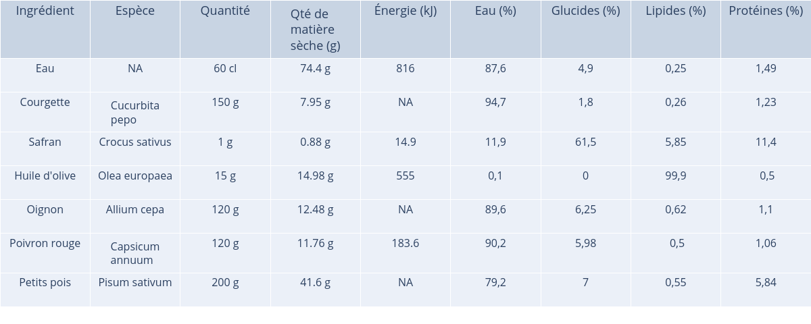
Phylogenetic diversity: 104.0
Weighted phylogenetic diversity: 18.2
Shannon's index: 1.4
Simpson's index: 0.23
Name of the recipe: Nouilles chinoises aux légumes et aux épices
URL of the recipe: https://www.marmiton.org/recettes/recette_nouilles-chinoises-aux-legumes-et-aux-epices_21482.aspx
Number of ingredients: 9
Number of specie found for the ingredients: 6
Ingredients that haven't match with a species: Huile, Nouilles chinoises, Mélange 5 épices
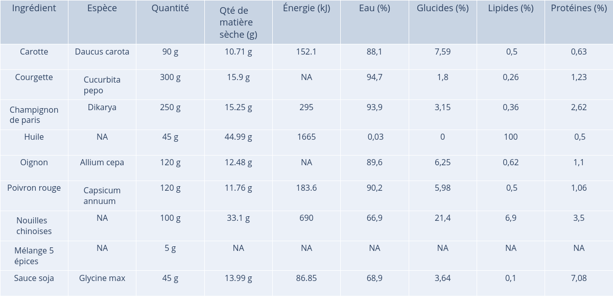
Phylogenetic diversity: 123.2
Weighted phylogenetic diversity: 20.54
Shannon's index: 1.61
Simpson's index: 0.11
Name of the recipe: gratin de brocolis
URL of the recipe: https://www.marmiton.org/recettes/recette_gratin-de-brocolis_22413.aspx
Number of ingredients: 10
Number of specie found for the ingredients: 7
Ingredients that haven't match with a species: Sel
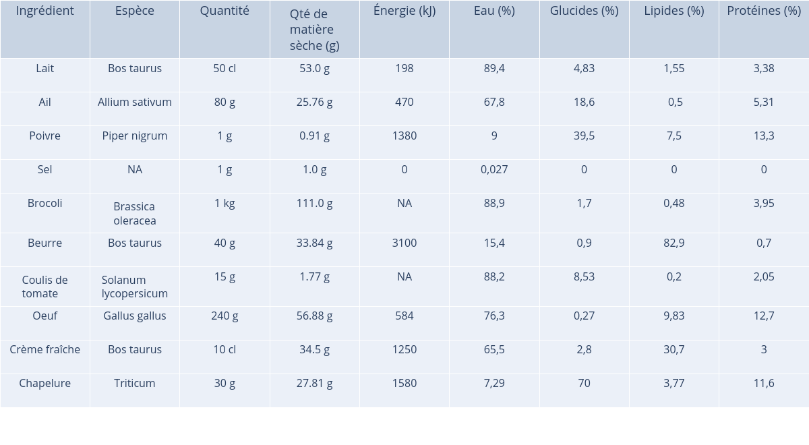
Phylogenetic diversity: 295.5
Weighted phylogenetic diversity: 33.63
Shannon's index: 2.13
Simpson's index: 2.06
Name of the recipe: Couscous végétarien facile
URL of the recipe: https://www.marmiton.org/recettes/recette_couscous-vegetarien-facile_62233.aspx
Number of ingredients: 13
Number of specie found for the ingredients: 11
Ingredients that haven't match with a species: Sel, Navet, Margarine
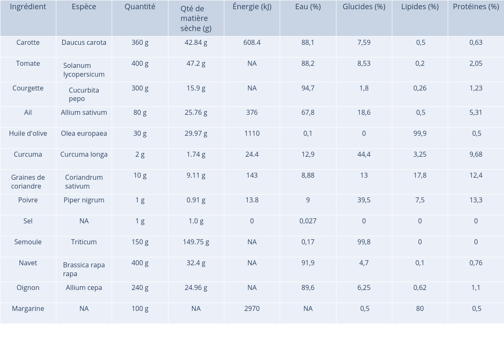
Phylogenetic diversity: 169.33
Weighted phylogenetic diversity: 18.02
Shannon's index: 1.79
Simpson's index: 2.9
Name of the recipe: Lasagnes de chou vert frisé
URL of the recipe: https://www.marmiton.org/recettes/recette_lasagnes-de-chou-vert-frise_36756.aspx
Number of ingredients: 12
Number of specie found for the ingredients: 9
Ingredients that haven't match with a species: Épices
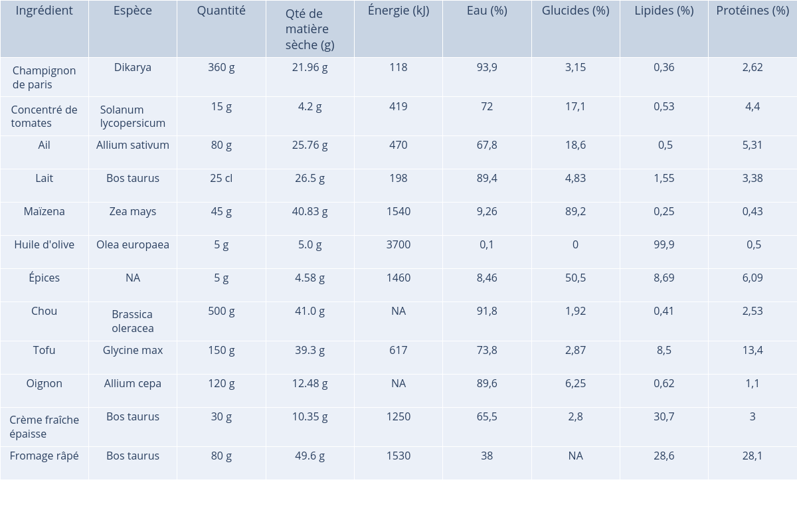
Phylogenetic diversity: 322.0
Weighted phylogenetic diversity: 31.02
Shannon's index: 3.37
Simpson's index: 1.36
Name of the recipe: Poivrons farcis riz et épices (végétarien)
URL of the recipe: https://www.marmiton.org/recettes/recette_poivrons-farcis-riz-et-epices-vegetarien_39545.aspx
Number of ingredients: 10
Number of specie found for the ingredients: 7
Ingredients that haven't match with a species: Curry, Ketchup, Mélange 4 épices
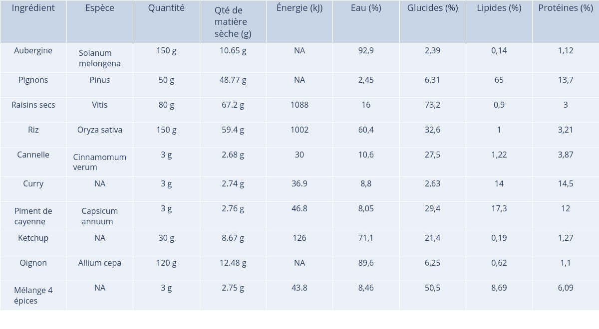
Phylogenetic diversity: 115.33
Weighted phylogenetic diversity: 17.17
Shannon's index: 1.62
Simpson's index: 1.07
Name of the recipe: Steaks végétariens
URL of the recipe: https://www.marmiton.org/recettes/recette_steaks-vegetariens_13685.aspx
Number of ingredients: 13
Number of specie found for the ingredients: 11
Ingredients that haven't match with a species: Sel, Huile
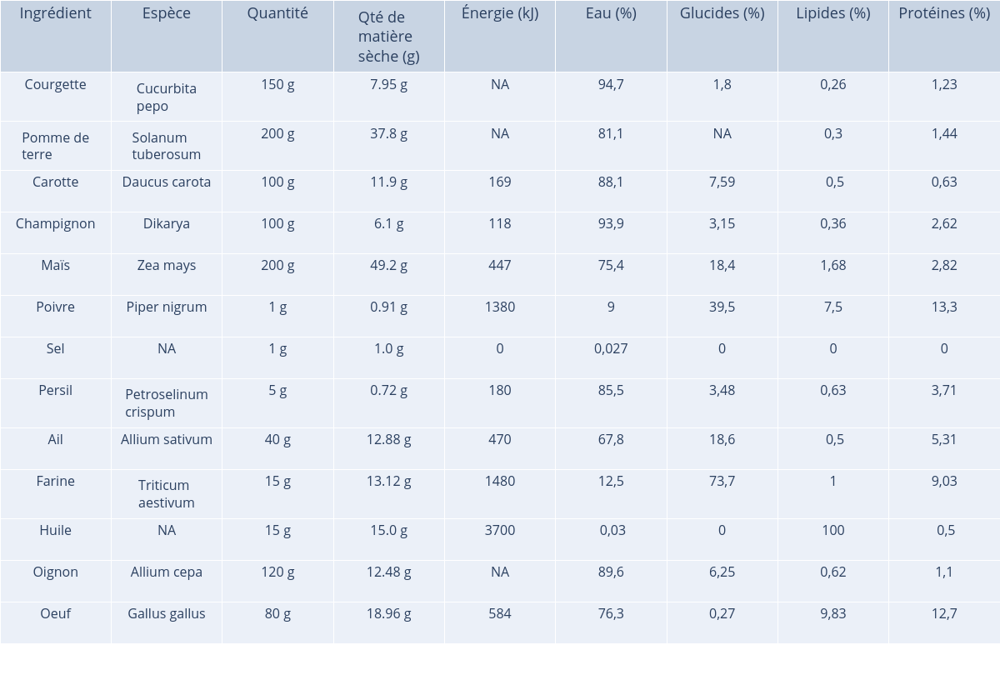
Phylogenetic diversity: 267.6
Weighted phylogenetic diversity: 25.29
Shannon's index: 2.53
Simpson's index: 0.49
Name of the recipe: Aubergines farcies à la mozzarella
URL of the recipe: https://www.marmiton.org/recettes/recette_aubergines-farcies-a-la-mozzarella_24336.aspx
Number of ingredients: 8
Number of specie found for the ingredients: 7
Ingredients that haven't match with a species: Sel
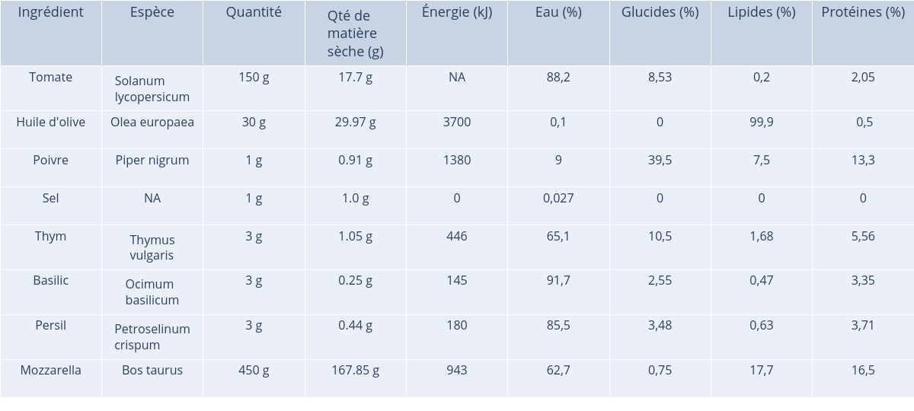
Phylogenetic diversity: 162.0
Weighted phylogenetic diversity: 39.93
Shannon's index: -0.07
Simpson's index: 2.94
Name of the recipe: Risotto au taleggio
URL of the recipe: https://www.marmiton.org/recettes/recette_risotto-au-taleggio_383608.aspx
Number of ingredients: 8
Number of specie found for the ingredients: 6
Ingredients that haven't match with a species: Bouillon de légumes, Sel
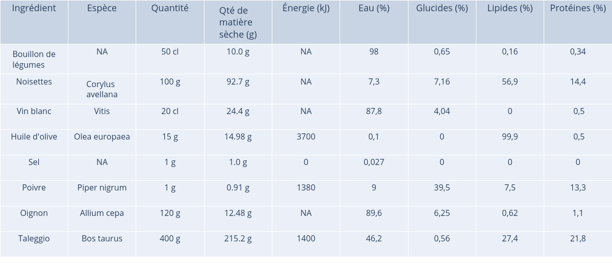
Phylogenetic diversity: 146.0
Weighted phylogenetic diversity: 34.48
Shannon's index: -0.65
Simpson's index: 5.59
Name of the recipe: Tarte verte
URL of the recipe: https://www.marmiton.org/recettes/recette_tarte-verte_29762.aspx
Number of ingredients: 10
Number of specie found for the ingredients: 9
Ingredients that haven't match with a species: Sel
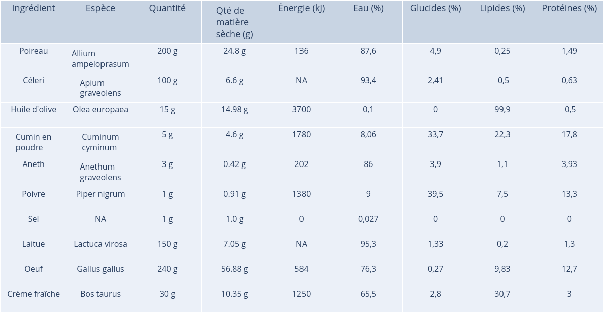
Phylogenetic diversity: 258.0
Weighted phylogenetic diversity: 36.55
Shannon's index: 1.76
Simpson's index: 0.43
Name of the recipe: Flan de poireaux au basilic
URL of the recipe: https://www.marmiton.org/recettes/recette_flan-de-poireaux-au-basilic_20885.aspx
Number of ingredients: 7
Number of specie found for the ingredients: 4
Ingredients that haven't match with a species: Sel, Margarine
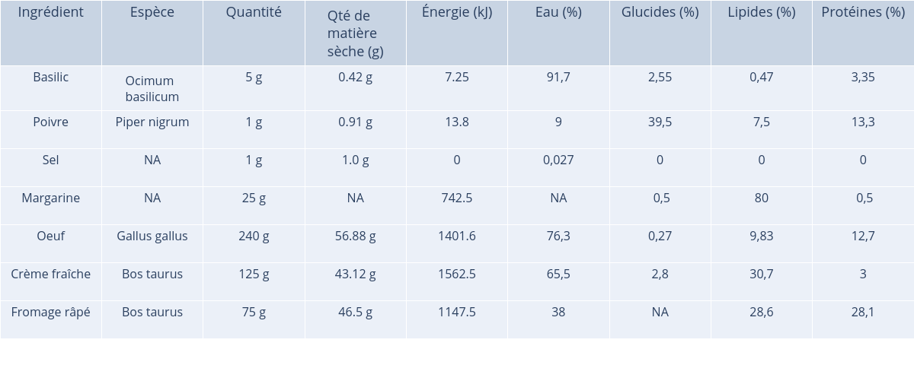
Phylogenetic diversity: 172.0
Weighted phylogenetic diversity: 32.46
Shannon's index: 1.1
Simpson's index: 0.76
Name of the recipe: Pâtes aux noix et à la sauge
URL of the recipe: https://www.marmiton.org/recettes/recette_pates-aux-noix-et-a-la-sauge_35514.aspx
Number of ingredients: 9
Number of specie found for the ingredients: 6
Ingredients that haven't match with a species: Sel
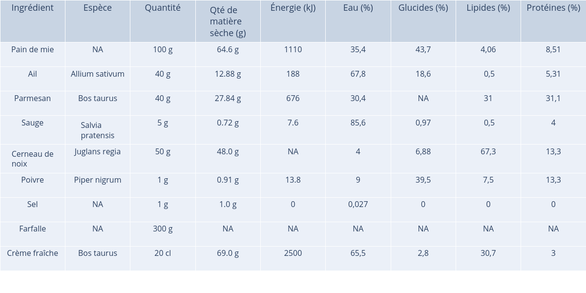
Phylogenetic diversity: 225.14
Weighted phylogenetic diversity: NA
Shannon's index: NA
Simpson's index: NA
Name of the recipe: gnocchi de patate douce
URL of the recipe: https://www.marmiton.org/recettes/recette_gnocchi-de-patate-douce_392192.aspx
Number of ingredients: 10
Number of specie found for the ingredients: 7
Ingredients that haven't match with a species: Sel

Phylogenetic diversity: 281.5
Weighted phylogenetic diversity: 30.82
Shannon's index: 0.66
Simpson's index: 4.59
Name of the recipe: Beignets végétariens à la tomate
URL of the recipe: https://www.marmiton.org/recettes/recette_beignets-vegetariens-a-la-tomate_53417.aspx
Number of ingredients: 10
Number of specie found for the ingredients: 7
Ingredients that haven't match with a species: Sel

Phylogenetic diversity: 281.5
Weighted phylogenetic diversity: 30.82
Shannon's index: 0.66
Simpson's index: 4.59